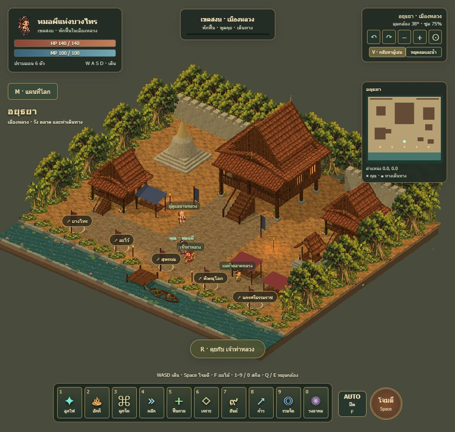
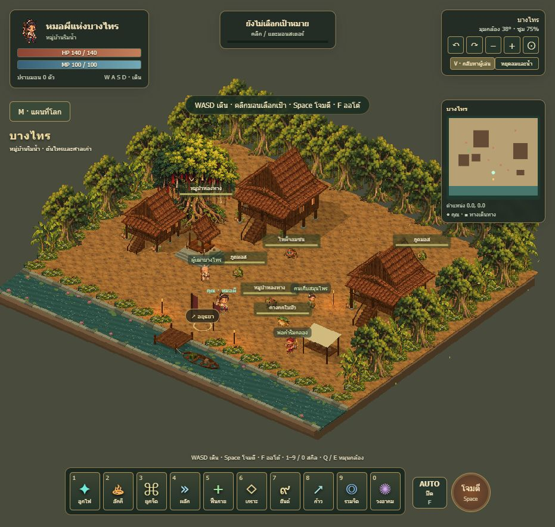
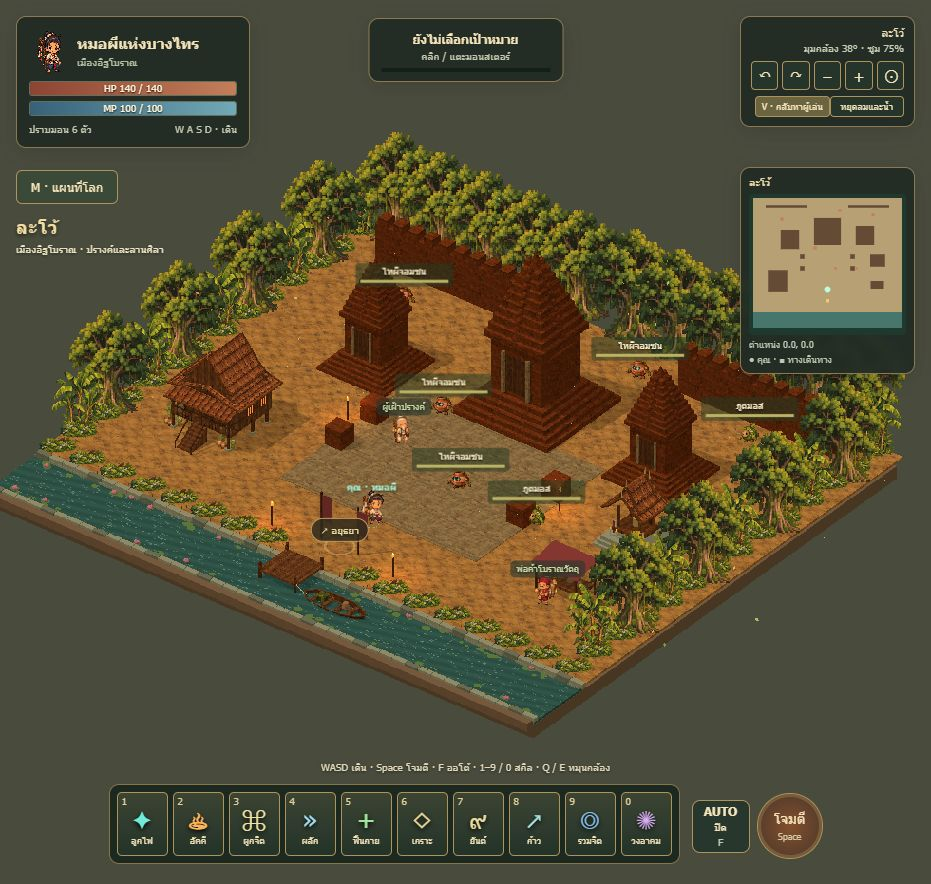
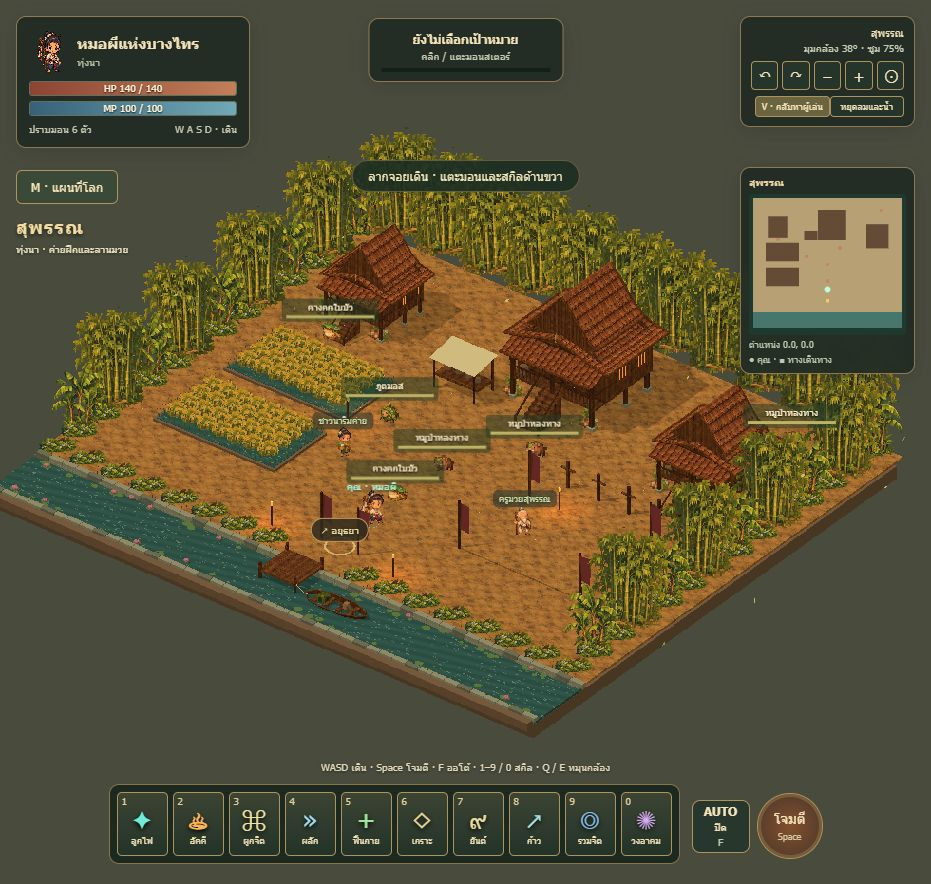
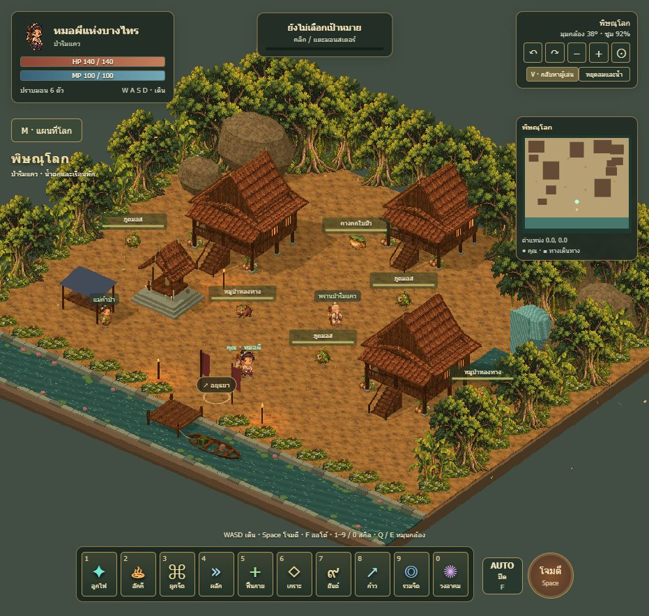
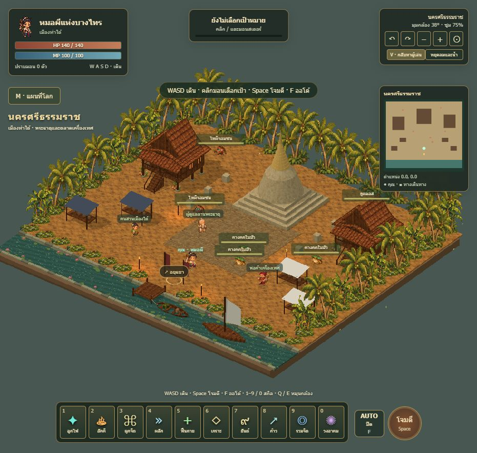

ภาพจากแมพที่เปิดเล่นได้จริง · เลือกภาพเพื่อเข้าเมืองในเกมกด M เปิดแผนที่โลก · V ดูทั้งเมือง · R ใช้วงเดินทาง

เมืองหลวง · วัง ตลาด และท่าเดินทาง

หมู่บ้านริมน้ำ · ต้นไทรและศาลเก่า

เมืองอิฐโบราณ · ปรางค์และลานศิลา

ทุ่งนา · ค่ายฝึกและลานมวย

ป่าริมแคว · น้ำตกและเรือนพัก

เมืองท่าใต้ · พระธาตุและตลาดเครื่องเทศ